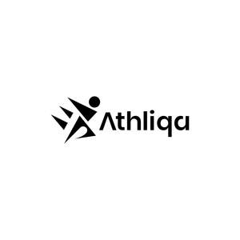

Trade Mark Journal No.2025/016 18 April 2025
UK00004184054 3 April 2025 (25)

- Class 25
- Clothing, footwear, headgear; clothing, namely tops and bottoms; sweat absorbent clothing; bodybuilding clothing, fitness clothing, gym clothing, sports clothing; ski wear; surf wear; leisurewear; clothing for gymnastics; dancewear; clothing for running; clothing for tennis; sweatbands; headbands; hats, caps, sun visors being head wear; beach hats; bobble hats and beanie hats; swimming caps; T-shirts, long sleeve t-shirts; crop t-shirts; running vests; vests and tank tops; polo shirts; sports shirts; crop tops; bodysuits; hooded jackets; tops, sweaters and jumpers; cardigans; knitwear; gilets; jackets; padded jackets; sports jackets; coats; jumpers; sweatshirts; cycling tops; pullovers; boxing robes; shorts; sweat shorts; gym shorts; running shorts; cycling shorts; boxing shorts; tennis shorts; dresses and skirts; clothing for martial arts; jumpsuits; dungarees; dresses and skirts for tennis; trousers; tracksuits and tracksuit bottoms; jogging bottoms; leggings; cropped leggings; ski pants; yoga pants; yoga shirts; tights; knitted tights; harem pants; underwear; thongs; briefs; boxer shorts; trunks being underwear; sports bras; bras; bralettes; socks; trainer socks and ankle socks; dressing gowns and robes; gloves; cycling gloves; base layer clothing; swimwear; beachwear; beach cover ups and wraps; sarongs; bikini tops, bikini bottoms, tankinis; swimsuits, swimming trunks; swimming shorts; rash vests, wetsuits; shoes; sports footwear; trainers; beach footwear; boots, sandals, flip flops, sliders; slippers; boxing shoes and boots; track shoes, running shoes and spiked running shoes; cycling shoes; golf shoes; gym shoes; dance shoes and dance slippers; tennis shoes; moisture wicking sports pants, shirts and bras; articles of outer clothing; articles of underclothing; scarves; pyjamas; babies clothing, footwear, headgear; infant clothing, footwear, headgear; baby boots; bibs; romper suits; baby sleepsuits; belts; sports singlets; athletic tights; bandanas; ballet shoes; baselayer tops; cashmere clothing; cargo pants; casualwear; clothing for wear in wrestling games; cover-ups; costumes; ear muffs; suits; eye masks; earbands; fishing clothing, footwear, headgear; functional underwear; golf clothing, headgear, footwear; insoles; jeans; jerseys; jogging suits; jogging clothing sets; leg warmers; leather clothing; leotards; light-reflecting coats; maternity clothing; maternity sports clothing; motorcyclists clothing; neckerchiefs; nightwear; one-piece suits; padded clothing for athletic use; playsuits; plimsolls; rainwear; rugby clothing; rugby footwear; football clothing; football footwear; shapewear; sleepwear; sports garments; stretch pants; sweat-absorbent socks, stockings, leggings, underclothing, outerclothing and clothing; tennis wear; thermal clothing, headgear, underwear; waist belts; water resistant clothing; walking shoes; windcheaters; combative sports uniforms; combative sports clothing, footwear and headgear; clothing, footwear and headwear for boxing, cage fighting, kickboxing and muay thai.
Arslan Rafique